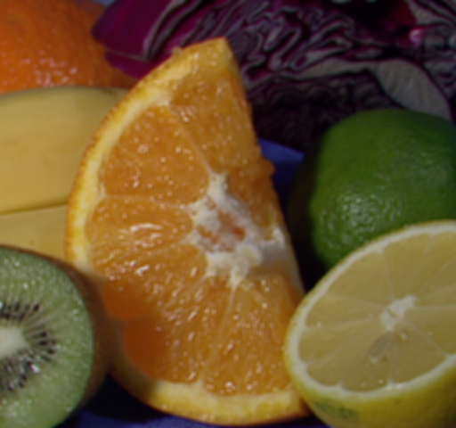

Image and video processing: From Mars to Hollywood with a stop at the hospital - Week 1
With this post i start describing my experience with a “Image and video processing: From Mars to Hollywood with a stop at the hospital” class. I will write a series of 9 posts each week i complete and highlight interesting tasks and solution to optional programming quizzes in OpenCV.
Week 1
The first week was very easy, just an introduction to image processing with explanation of basics and fundamental things. Took a day to see all video lectures and answer questions.
Optional task: Average 3x3 blur
Task
Using any programming language you fill comfortable with, perform a simple spatial 3x3 average of image pixels. In other words, replace the value of every pixel by the average of the values in its 3x3 neighborhood. If the pixel is located at (0,0), this means averaging the values of the pixels at the positions (-1,1), (0,1), (1,1), (-1,0), (0,0), (1,0), (-1,-1), (0,-1), and (1,-1). Be careful with pixels at the image boundaries. Repeat the process for a 10x10 neighborhood and again for a 20x20 neighborhood. Observe what happens to the image (we will discuss this in more details in the very near future, about week 3).
Solution
First of all, there is cv::blur function that performs what is exactly requested. But to practice, we’re gonna to write its our own implementation.
The trivial implementation is to traverse over each pixels, and compute NxN sum over each pixel. But that’s extremely slow and inefficient solution.
The most time-consuming operation is calculation of sum of intensities in given area, which has complexity about O(N^2), where N is kernel size. There is a way to perform this operation in O(1) time by using integral images**. In OpenCV we can use **[cv::integral]4 function to compute the integral image for given image and then use it to quicly compute sum or elements in particular area.
So, our algorithm looks as follows:
- Take input image
- Create temporary image with padded borders (to handle border case we extend input image by replicating border pixels using [cv::copyMakeBorder]5 function)
- Compute integral image of it
- Compute sum of each region, divide it by kernel area and write the result to output image
Here is a complete function that performs average sampling using given kernel size. It does perform operation in-place:
void sampleImage(cv::Mat_<unsigned char>& img, int halfKernelSize)
{
cv::Mat padded;
cv::copyMakeBorder(img, padded, halfKernelSize, halfKernelSize, halfKernelSize, halfKernelSize, cv::BORDER_REPLICATE);
cv::Mat_<int> integral;
cv::integral(padded, integral);
int sampleArea = (halfKernelSize * 2 + 1) * (halfKernelSize * 2 + 1);
for (int row = 0; row < img.rows; row++)
{
for (int col = 0; col < img.cols; col++)
{
int sum = integralSum(integral, row + halfKernelSize, col + halfKernelSize, halfKernelSize);
img(row, col) = cv::saturate_cast<unsigned char>(sum / sampleArea);
}
}
}
</int></unsigned>
The integralSum function calculates the sum of pixel values in a given area (row and cols indicates center of kernel):
int integralSum(cv::Mat_<int>& integralImage, int row, int col, int halfKernelSize)
{
return + integralImage(row + halfKernelSize + 1, col + halfKernelSize + 1)
+ integralImage(row - halfKernelSize, col - halfKernelSize)
- integralImage(row + halfKernelSize + 1, col - halfKernelSize)
- integralImage(row - halfKernelSize, col + halfKernelSize + 1);
}
</int>
Running this function on the image gives us following output:
Input image:

Average blur of 5x5 kernel (grayscale):
Average blur of 5x5 kernel (color):

In this solution i didn’t posted RGB-version of the algorithm. But the idea is exactly the same. Each color plane is processed independently and then you compute the final RGB pixel value. I leave it for your home work :)